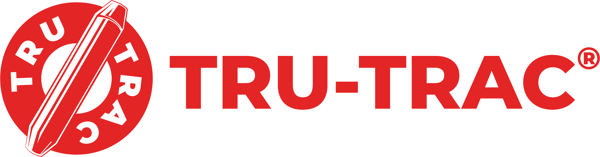
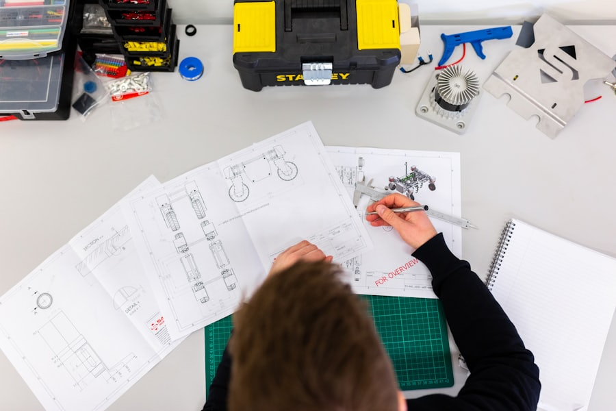

One system for everything Tru-Trac puts on a page.
Reports and dynamic HTML reports, PDF documents, proposals, technical documents, product handbooks, presentations and web pages. Light is the primary surface because most of this prints. Dark is a mode, not the default.
Logo
Ten official assets. The wordmark is drawn artwork with a registered mark, so it is never typeset as a substitute. Every supplied file is a knockout, which is why the reverse variants exist.
Light surfaces
lockup-charcoal · default for documents

lockup-red · covers only
mark-charcoal · running heads
Dark surfaces, reverse only
lockup-red-reverse
lockup-white · single colour, over imagery
mark-red-reverse
The supplied rasters carry #e42526 and #e32726 for red and
#3a3a3c for charcoal. The locked tokens are #E1261C and #414042.
They are close and they are not the same. The rasters are artwork, not a palette.
All ten are rasters. Comfortable to about 850 px on screen at 2× and 75 mm at 300 dpi. A vector master with white counterforms should replace them when the brand pack is next opened.
The page
The unit this system is actually about. Cover, section opener, specification page, running head and folio. Every page carries the mark, a document reference and a page number, because these documents circulate detached from their covers.
Cover
Installation
The flight must be locked out before any part of the assembly is offered to the stringer.
Set the pivot square to the belt centre line before tightening. A unit fitted out of square will correct in one direction only and will present as an intermittent fault.
Torque the stringer clamps to 95 Nm in the sequence shown. Re-check after the first eight hours of running.
Section opener
Specification
| Model | BW | Tension | Mass |
|---|---|---|---|
| TT-APX-TT-0900 | 900 | 42 kN | 64 kg |
| TT-APX-TT-1200 | 1200 | 58 kN | 91 kg |
| TT-APX-TT-1500 | 1500 | 76 kN | 118 kg |
| TT-APX-TT-1800 | 1800 | 94 kN | 149 kg |
| TT-APX-TT-2400 | 2400 | 128 kN | 186 kg |
Dimensions in millimetres unless stated. Mass excludes the belt.
Data page
Sample data throughout. None of these figures is a published Tru-Trac specification.
Document components
The parts every Tru-Trac document is assembled from.
Contents
Figure and caption
Admonitions
Torque figures assume dry, unlubricated fasteners. Reduce by 20 percent if anti-seize is applied.
Do not use the guide roller as a lifting point. The linkage is not rated for the mass of the assembly.
Lock out and tag the drive before any part of the assembly is offered to the stringer. Contact with a moving belt causes serious injury.
Specification list and revision block
- Belt width range
- 900 to 2400 mm
- Maximum belt tension
- 128 kN
- Trough angle
- 35° / 45°
- Pivot travel
- ±9°
- Clamp torque
- 95 Nm
Data table
| Mounting | |||||
|---|---|---|---|---|---|
| TT-APX-TT-0900 | 900 | 42 kN | 352 | 64 kg | Stringer clamp |
| TT-APX-TT-1200 | 1200 | 58 kN | 418 | 91 kg | Stringer clamp |
| TT-APX-TT-1500 | 1500 | 76 kN | 474 | 118 kg | Stringer clamp |
| TT-APX-TT-1800 | 1800 | 94 kN | 556 | 149 kg | Bolted bracket |
| TT-APX-TT-2400 | 2400 | 128 kN | 668 | 186 kg | Bolted bracket |
| Range | 900 to 2400 | 42 to 128 kN | 352 to 668 | 64 to 186 kg | n/a |
Reports
Dynamic HTML reports and the printed version of the same thing. A figure leads, the finding explains it, and the reference number lets someone quote it back to you.
Root cause by incidence
Sample data. Share by incidence, not by cost.
Finding
Carry-back accounts for nearly a third of measured drift and it is a maintenance fault, not a design one. A return tracker contains it. It does not remove the need to fix the scraper.
Owner: David Pereira · Due: 30 September
Presentations
Four masters. Anything that will not fit one of them belongs in a document, not on a slide.
The rules that decide whether a PDF looks made or generated. Hit the Print preview button in the bar to see them applied.
Page
- Size
- A4
- Margins, top / sides / foot
- 22 / 20 / 20 mm
- Body size
- 10.5 pt
- Leading
- 1.5
- Measure
- 72 characters
- Orphans and widows
- 3 lines
Breaking
Headings never break away from what follows them: break-after: avoid-page
on every level. Figures, tables, admonitions and revision blocks never split across a page.
Navigation, buttons and mode toggles disappear entirely. External links print their URL after the
link text, because a printed link that only says "here" is useless.
The @page margin boxes carrying the running
head and page number need a paged formatter. Browsers ignore them. Use WeasyPrint, which is
already the Tru-Trac print pipeline, or Paged.js for a browser preview.
Controls and states
Dynamic HTML reports and web pages need these. A document system that only styles paper is half a system. Every interactive target clears 44 by 44, and focus never animates because focus is keyboard-initiated.
Buttons, every state
| Variant | Rest | Hover | Disabled | Working |
|---|---|---|---|---|
| Primary | ||||
| Secondary |
Labels are verb plus object. “Request assessment” beats “Submit”. The label says what happens when it is pressed.
Fields, including the states people forget
Read-only and disabled are different states and they look different. Read-only content is still yours; disabled content is not yours to change.
Nothing yet
No flights assessed yet. Assessments appear here once an engineer has walked a flight and recorded drift at each idler set.
Imagery
Four roles and one tonal grade. Every photograph in the system runs the same grade so that adjacent images on a spread read as one shoot, not as whatever was on the drive.
Stock placeholders, verified to resolve. They stand in until the Tru-Trac library is available and none of them shows a Tru-Trac installation.
Site, full bleed with an overlay
Fitted on 412 flights across eighty countries
Site photography carries the argument that this equipment lives in real plant. It runs full bleed, hard edges, no radius.
Product, condition and technical
SITEPeople and plant. Proves the work happens where the customer works. 16:9 or 4:3, full bleed where it leads a page.

CONDITIONBefore and after, matched framing, unretouched, dated. Always presented as a pair at 3:2.
TECHNICALDrawings, sections and dimensioned views. The role that carries a handbook.
APPLICATIONThe industry, not the product. Opens a sector section or a proposal.
Treatment
Saturation 72 percent, contrast 106, brightness 97. Applied to every photograph without exception, which is what makes a spread read as one grade. Hard edges, no radius, no border on full-bleed imagery. Text over a photograph always sits on a scrim, never directly on the image.
Alt text is part of the voice
Describe what is in the frame and why it is there. Bulk handling plant under low grey cloud, stacks and conveyor gantries against the skyline beats industrial site. Every image carries width and height so nothing shifts as it loads.
Editorial
The parts that carry an argument through a long document. A technical manual without a pull quote and a margin note is a parts list.
Pull quote
Belt damage from mistracking is the cheapest failure to prevent and the most expensive to ignore.
ENGINEERING NOTE EN-114 · SECTION 1.2
Body with margin notes and footnotes
Set the pivot square to the belt centre line before tightening. A unit fitted out of square will correct in one direction only and will present on site as an intermittent fault, usually blamed on the splice.1
Torque the stringer clamps to 95 Nm in the sequence shown, then re-check after the first eight hours of running. Thermal cycling relaxes a cold-set clamp.2
- 1Recurrence after a splice replacement almost always indicates the tracker, not the splice.
- 2Figures assume dry, unlubricated fasteners. Reduce by 20 percent with anti-seize applied.
Tabbed disclosure
Arrow keys move between tabs, Home and End jump to the ends. Tabs are for peer content of equal weight; anything sequential belongs in numbered sections.
Page break marker and specification block
# Selection, 1200 mm carry side MODEL TT-APX-TT-1200 BELT WIDTH 1200 mm TENSION 58 kN (max) TROUGH 35° TORQUE 95 Nm (dry, unlubricated)
Grid
Twelve columns at a 24 px gutter, on an 8 px baseline. Every line height in the scale resolves to a whole number of baseline units, so stacked elements never drift out of register across a spread.
| Role | Size | Leading | Baseline units | Use |
|---|---|---|---|---|
| Title | 61 | 72 | 9 | Covers, section openers |
| H1 | 39 | 48 | 6 | Section heads |
| H2 | 31 | 40 | 5 | Sub-section heads |
| H3 | 25 | 32 | 4 | Block heads, pull quotes |
| Lead | 20 | 32 | 4 | Opening paragraph |
| Body | 16 | 24 | 3 | Running text, 66ch measure |
| Small | 14 | 24 | 3 | Tables, notes |
| Caption | 13 | 24 | 3 | Figure captions, margin notes |
Rules carry meaning
Colour
OKLCH, twelve neutral steps and seven reds. The accent stays under ten percent of any surface and marks the primary action, the focus state, and the one thing under discussion.
Typography
Archivo across two axes, JetBrains Mono for data only. Weight rises as size falls, which is the relationship that keeps a document hierarchy legible at 10.5 pt.